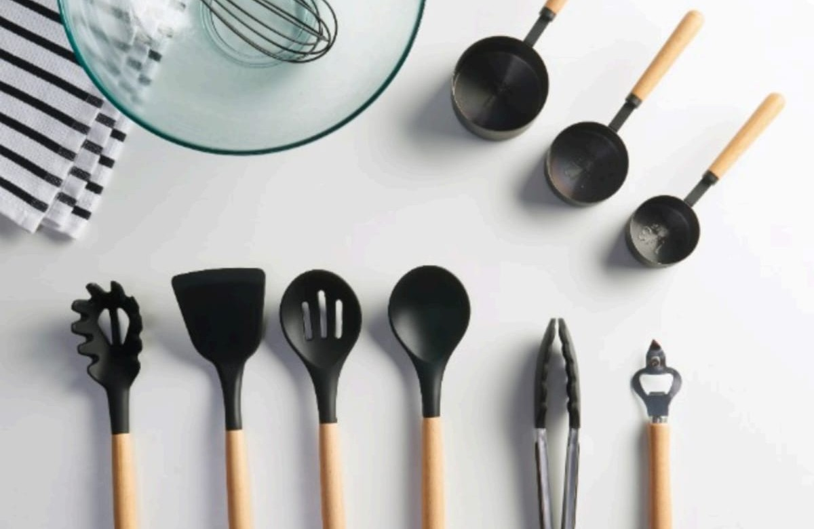

Kitchen Tools That Make Cooking Easier
Kitchen toolsplay an important role in making cooking simple, fast, and enjoyable. From preparing ingredients to serving delicious meals, the right kitchen equipment help improve efficiency and comfort in the kitchen.
Measuring cups and spoons help maintain accurate ingredient qualities, espeacially while baking. Whisks are useful for mixing batters, eggs, and sauces smoothly. Graters help shred vegetables, cheese, and spices quickly, while rolling pins are prefect for preparing dough for bread, cooking, and pastries.
Kitchen tools not only save time but also improve the overall cooking experience. High-quality utensils make food preparation easier, cleaner, and more organized. they also help beginners feel more confident while learning differt cooking techniques.
A well-equipment kitchen allows people to prepare healthy and delicious meals comfortably at home. Whether you are an experienced cook or someone just starting to learn cooking, having the right kitchen tools can make every meal preparation more enjoyable and efficient.
Modern kitchen tools combine functionality with stylish designs, making kitchens look organized and professional.Choosing durable and pratical tools is a great investment for every home.